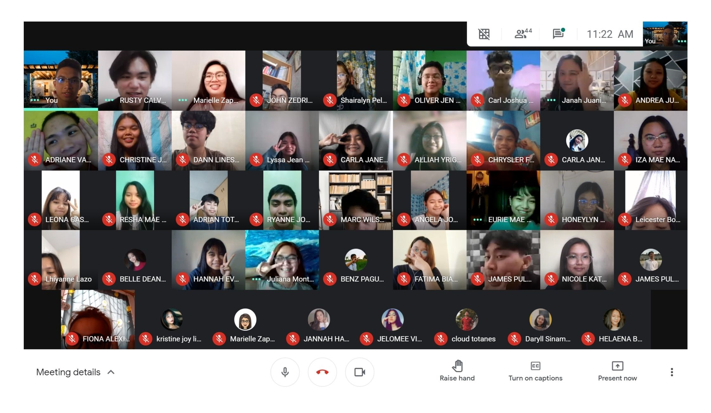

Home Page
My Task Compilation
My Contacts
Do You Know Me?
My Demographic Profile
Name: Joannel M. Tolentino
Age: 17 years old
Status: Single

Current G/T/S: STEM 11-4
Current School: Bulihan Integrated National Highschool (BINHS)
My Psychographic Profile
Hobbies
- My Hobbies are playing different kinds of Musical Instruments! Specifically, I play the Piano, Viola, Violin, Cello, Guitar, Flute, Recorders, Kalimba, different Percussion instrument (Suspended Cymbals, Timpani, etc.), and many others. I also love to sing in a choir because it sounds great and the experience is really exhilarating. But I also love to sing along with my playing and sometimes in a quartet or small group of people. I also Compose and Arrange Songs! These days, I arrange mostly choir pieces and wedding songs. I also play different sports like Basketball, Badminton, Swimming, Cycling, and Baseball.
My Current Lifestyle
- The Lifestyle I experience now is just a simple kind of Life. I wake up, take a breather and some exercise outside, then do some household chores. If there are online classes, I adjust my body clock and wake up early and do what I needed to do. And if I have spare time, I practice my instrument, watch movies or series, or take a nap. On weekends, me and my family are going to our farm to remove some grass. We are having fun most of the time!
My Ideal Lifestyle
- The Ideal Lifestyle I always wanted is the Life where I can do what I want, whenever and whatever. Basically, I want to live my Life to the fullest and avoid any obstructions. I want to pursue my dreams the way I wanted and make my family and people around me proud. In that Lifestyle, I want my family to be at a better environment and getting along just fine. As for me, I want to be able to express my feelings and thoughts with my art. Therefore, I want to live every minute of my life as if it were the last.
Motto to Share.
- “Life is Meaningless without Problems because those "problems" make life fun and worth living. It is a part of Life and we should be able to live with it. But it does not mean you will live your life thinking about those “problems”. That kind of perspective make life worthwhile. Therefore, don’t miss out on the joys of life. Live!”
My Views About
Empowerment Technology
What Is ETECH?
- Empowerment Technology is a subject that deals with the use of different technologies such as mobile phones, telephone, computer, and other devices to locate, save, communicate and to inform. It also deals with the software apps used in a computer like Microsoft Word, PowerPoint, and Excel. My Views about Empowerment Technology is that it deals with Technology and what is inside of it. In this semester, we tackled mostly about the Software used in a computer and how it should be used as a tool to live life easier. ETECH also teaches how to use the modern technology innovatively and integrate its uses and advantages in our daily lives. It can be used to Inform, Communicate, Know, Understand and Learn a lot of things. ETECH is what makes our world going while advancing human civilization. It is designed to help people and make them live better and happily.
What I Have Learned and What I Can Share
- I have learned a lot of things like how to use Microsoft Word effectively. I also learned to use PowerPoint which is useful for presentations. Of course, I also learned excel and its formula for it to function in its full capacity. I also absorbed most of the technological terms and complicated formulas. But that’s what make it fun to learn. We also studied about editing of pictures and how to make a website which uses JavaScript. These technologies assist us in our daily living by making my work and assignments much easier. Well, that is what computers are for, to make life easier. It can also be used for entertainment and acquiring new skills. That is why, I’ll be happy to share all the knowledge that I have gained in this subject for the future generations for the to improve it much further and use it for their life to be much easier and fun.
Favorite Topics
- My Favorite topics are the Contextualized Search and Researching Skills, and Imaging and Designs! I find Contextualized Search and Researching Skills helpful since I love to browse on the Internet and that lesson helped me how to hover and navigate in the web easily. I particularly like the lesson about Imaging and Designs since I love editing pictures and stuff. By listening through the lessons, I have now the idea what I am using when I am editing pictures. I also became more conscious and aware what should be done and how it should turn out.
Recommendation
- Since in this age, many young people are fond in using Technology. Though it is helpful and advantageous, we cannot help to think that it has its own disadvantages and effects on the people that are using it. It makes our life easier, but it does not mean you are going to sit back and relax. We should improve ourselves and help our economy flourish. For me, using technology has no negative effects nor disadvantages. It is actually useful and full of advantages. But if you use it more intently and consumes most of your time, that is when you should stop and think. Using Technology is not that bad if you use it with Balance on your side. Technology is what makes our world going and advancing human civilization. It is designed to help people and make people live better and happily.
Home Page